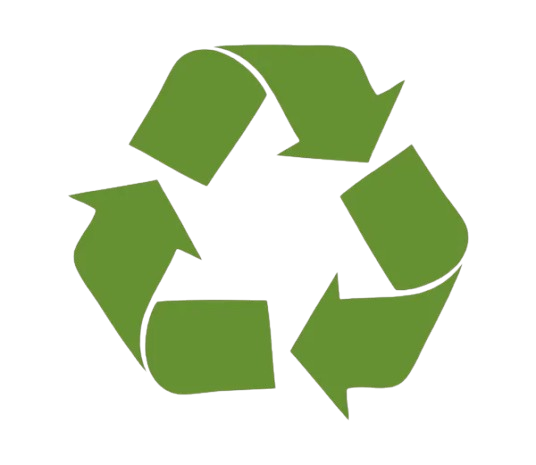
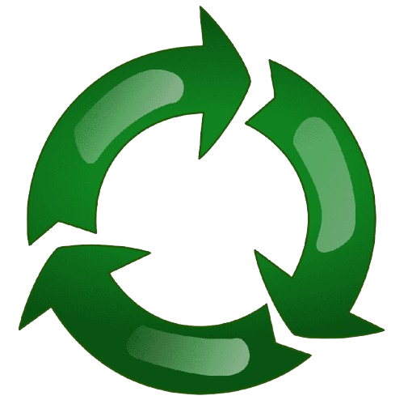

conceptos basicos

Reciclaje
A través del reciclaje podemos lograr el desarrollo sostenible y el cumplimiento de los Objetivos de Desarrollo Sostenible, puesto que no solo busca la protección del medio ambiente y la detención de la sobreexplotación de los recursos naturales.

Reutilizar
Reutilizar consiste en darle una segunda vida a los materiales u objetos antes de desecharlos. Así alargamos su vida útil y aprovechamos sus propiedades al máximo, reduciendo, también, los residuos que generamos.

Reducir
La Reducción ahorra la necesidad de extraer de nuevo recursos naturales y utilizar agua y energía para la obtención de nuevos materiales. Podemos reducir el consumo de productos con envoltorios innecesarios y envasados excesivos, con lo cual se generarán menos residuos.